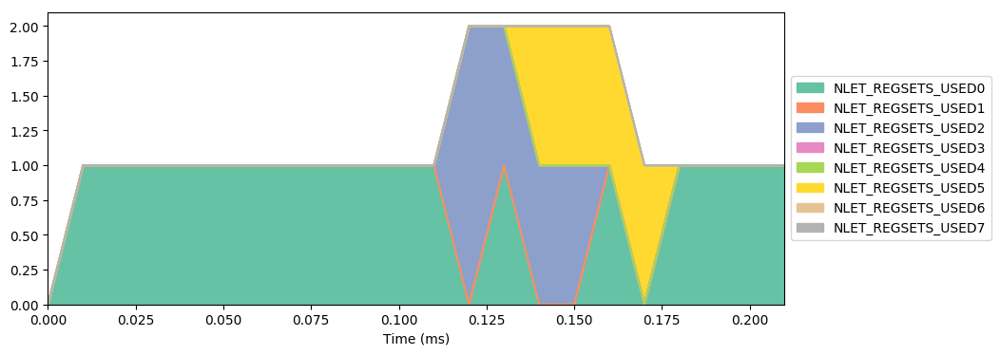
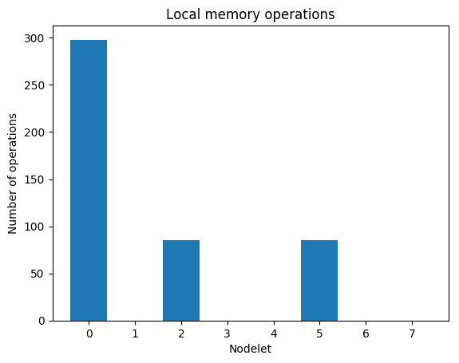
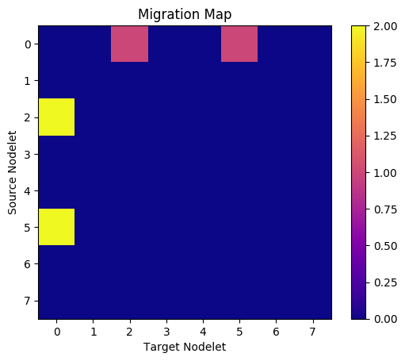
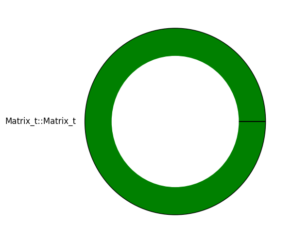

Command line:
repl_class.mwx
Active threads per nodelet over time

Total instructions executed by function
i.e. what percentage of thread execution time was spent in a given function?
Memory Map
Local memory traffic

Total migrations by nodelet pair

Remotes Map
Remote writes and remote atomics
Percent of total migrations grouped by function
i.e. what percentage of total thread migrations occurred in a given function?
